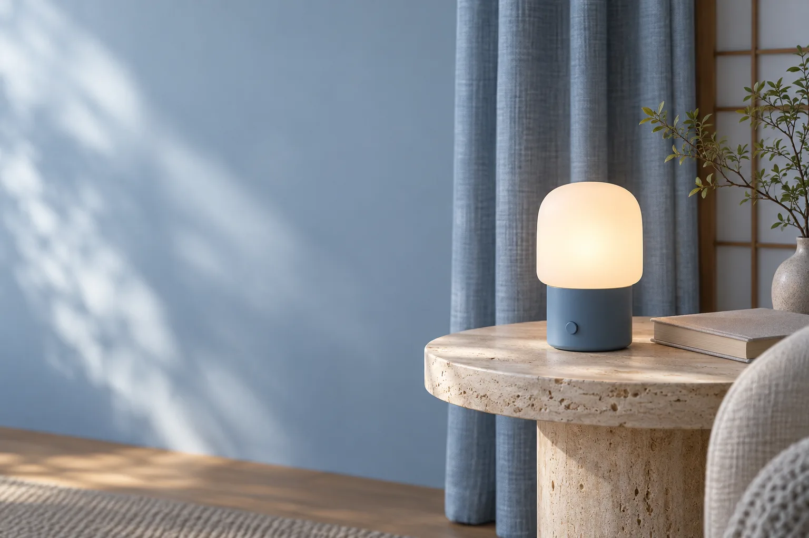
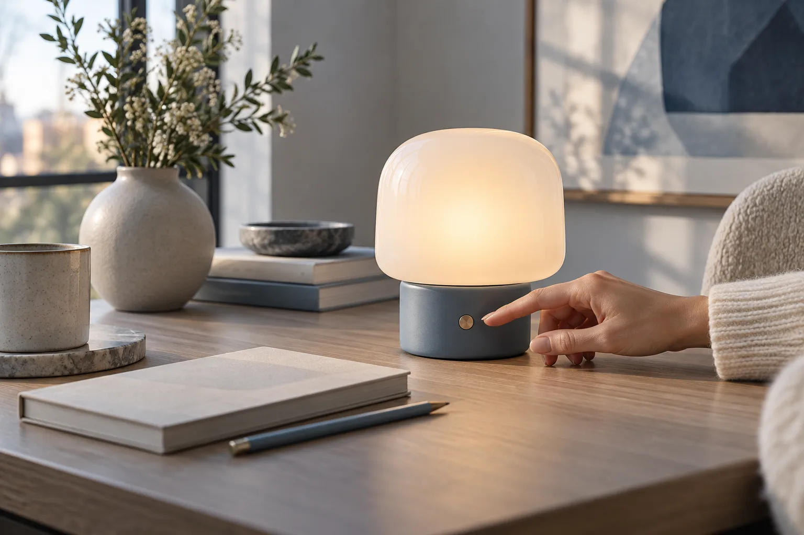
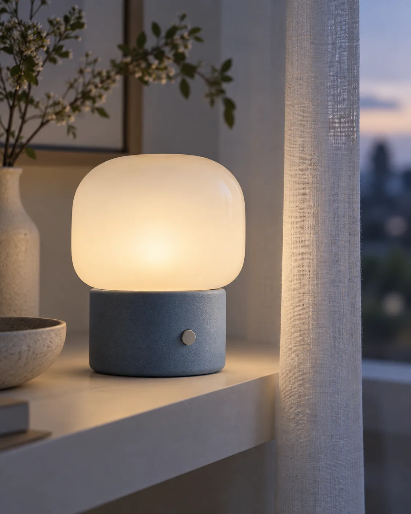

つくる理由
誰のどんな暮らしに届けたいか。開発の背景を、支給資料に沿って紹介する枠です。

CROWDFUNDING / CONCEPT
机から、窓辺へ。
持ち運ぶ明かりという、小さな提案。
企画イメージ。仕様・価格・発売時期は未設定です。
01 / OUR IDEA
家の中で過ごす場所は、その日によって変わるから。大きな照明を変える前に、手元に小さな明かりを置いてみる。そんな暮らしを想像したコンセプトです。
02 / FIND YOUR SCENE

ノートをひらく机の片隅に。手元へ明かりを添える暮らしのイメージです。
使用シーンはAIによるコンセプト画像。実物の外観・明るさを示すものではありません。
03 / THE FORM
丸みのあるガラスのかたち。
光を受け止める、青いボディ。
操作する場所がひと目で分かる表情。
見た目だけでなく、持つ・置く・触れるという動作から、紹介する順番を組み立てています。
素材・寸法・重量・電源方式は未確定。デザインを検討するための仮設定です。

04 / LIGHT STUDY
つまみを動かすと、画面上の光が変わります。
製品の調光性能を再現するものではありません。
視覚表現のデモ／照度・色温度の測定値ではありません
05 / BEFORE LAUNCH
誰のどんな暮らしに届けたいか。開発の背景を、支給資料に沿って紹介する枠です。
試作・検証結果と、まだ検討中のことを分けて掲載する設計です。
製造・配送の日程と、変更時の案内方法を公開前に確定します。
このデモにリターン価格・支援募集・決済はありません。正式な仕様、検証結果、提供条件が揃ってから、実際の募集先への導線を設けます。
06 / QUESTIONS
購入できません。案件のデザイン・構成を伝える架空の提案デモです。
すべてAI生成イメージです。形や光の表現は、実際の製品仕様を示しません。
このコンセプトでは未設定です。本番では確認済みの仕様・試験結果を掲載します。
登録されません。個人情報を入力せず、関心の選択と確認画面を体験できます。
上部から切り替えられます。クラファンでは背景と計画、広告では暮らしと選び方、プレスでは掲載情報を中心に構成しています。
A LITTLE LIGHT, YOUR OWN PLACE.